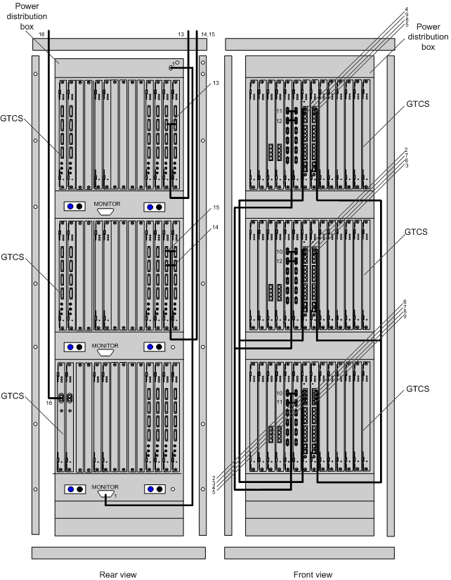

The signal cables in the GBSR consist of the active/standby 75-ohm coaxial cable, active/standby 120-ohm twisted pair cable, optical cable, straight-through cable, inter-GTNU cable, Y-shaped clock cable, and PDB monitoring signal cable.
Figure 1 shows the connections of the signal cables in the GBSR.

- Figure 1 shows the connections of the signal cables in a GBSR that is configured with three GTCSs. If the number of GTCSs to be configured is greater than three, another cabinet is required. The connections of signals cables for more than three GTCSs are the same.
- The types of interface boards, installation positions of cables, and number of cables shown in Figure 1 are examples. The actual types of interface boards, installation positions of cables, and number of cables depend on the site plan.
- In Figure 1, the lowest GTCS serves as the main subrack and the GSCUs in the subracks are connected in the form of star topology. In practice, any GTCS can be used as the main subrack.
Table 1 describes the connections of the signal cables in the GBSR.
SN |
Description |
Connector Type/Installation Position 1 |
Connector Type/Installation Position 2 |
|---|---|---|---|
1 |
PDB monitoring signal cable |
DB15/port connecting the PDB to a service subrack |
DB15/MONITOR port on the lowest subrack |
2 |
Inter-GSCU Ethernet cable |
RJ45/10/100/1000BASE-T port on the GSCU that is installed in slot 6 of the main GTCS |
RJ45/10/100/1000BASE-T port on the GSCU that is installed in slot 6 of the GTCS |
3 |
Inter-GSCU Ethernet cable |
RJ45/10/100/1000BASE-T port on the GSCU that is installed in slot 6 of the main GTCS |
RJ45/10/100/1000BASE-T port on the GSCU that is installed in slot 7 of the GTCS |
4 |
Inter-GSCU Ethernet cable |
RJ45/10/100/1000BASE-T port on the GSCU that is installed in slot 6 of the main GTCS |
RJ45/10/100/1000BASE-T port on the GSCU that is installed in slot 6 of the GTCS |
5 |
Inter-GSCU Ethernet cable |
RJ45/10/100/1000BASE-T port on the GSCU that is installed in slot 6 of the main GTCS |
RJ45/10/100/1000BASE-T port on the GSCU that is installed in slot 7 of the GTCS |
6 |
Inter-GSCU Ethernet cable |
RJ45/10/100/1000BASE-T port on the GSCU that is installed in slot 7 of the main GTCS |
RJ45/10/100/1000BASE-T port on the GSCU that is installed in slot 6 of the GTCS |
7 |
Inter-GSCU Ethernet cable |
RJ45/10/100/1000BASE-T port on the GSCU that is installed in slot 7 of the main GTCS |
RJ45/10/100/1000BASE-T port on the GSCU that is installed in slot 7 of the GTCS |
8 |
Inter-GSCU Ethernet cable |
RJ45/10/100/1000BASE-T port on the GSCU that is installed in slot 7 of the main GTCS |
RJ45/10/100/1000BASE-T port on the GSCU that is installed in slot 6 of the GTCS |
9 |
Inter-GSCU Ethernet cable |
RJ45/10/100/1000BASE-T port on the GSCU that is installed in slot 7 of the main GTCS |
RJ45/10/100/1000BASE-T port on the GSCU that is installed in slot 7 of the GTCS |
10 |
Inter-GTNU cable |
DB14/TDM port on the GTNU that is installed in slot 4 or 5 of the GTCS |
DB14/TDM port on the GTNU that is installed in slot 4 or 5 of the GTCS |
11 |
Inter-GTNU cable |
DB14/TDM port on the GTNU that is installed in slot 4 or 5 of the GTCS |
DB14/TDM port on the GTNU that is installed in slot 4 or 5 of the GTCS |
12 |
Inter-GTNU cable |
DB14/TDM port on the GTNU that is installed in slot 4 or 5 of the GTCS |
DB14/TDM port on the GTNU that is installed in slot 4 or 5 of the GTCS |
13 |
E1/T1 cable connecting the EIUa/PEUa to the DDF or other NEs |
DB44/E1/T1 port on the EIUa/PEUa that is installed in slot 14 or 15 of the GTCS |
DDF or other NEs |
14 |
E1/T1 cable connecting the EIUa/PEUa to the DDF or other NEs |
DB44/E1/T1 port on the EIUa/PEUa that is installed in slot 14 or 15 of the GTCS |
DDF or other NEs |
15 |
E1/T1 cable connecting the EIUa/PEUa to the DDF or other NEs |
DB44/E1/T1 port on the EIUa/PEUa that is installed in slot 14 or 15 of the GTCS |
DDF or other NEs |
16 |
Optical cable |
LC optical port/RX/TX port on the OIUa that is installed in slot 27 of the GTCS |
OIUa of the GMPS/GEPS or ODF |